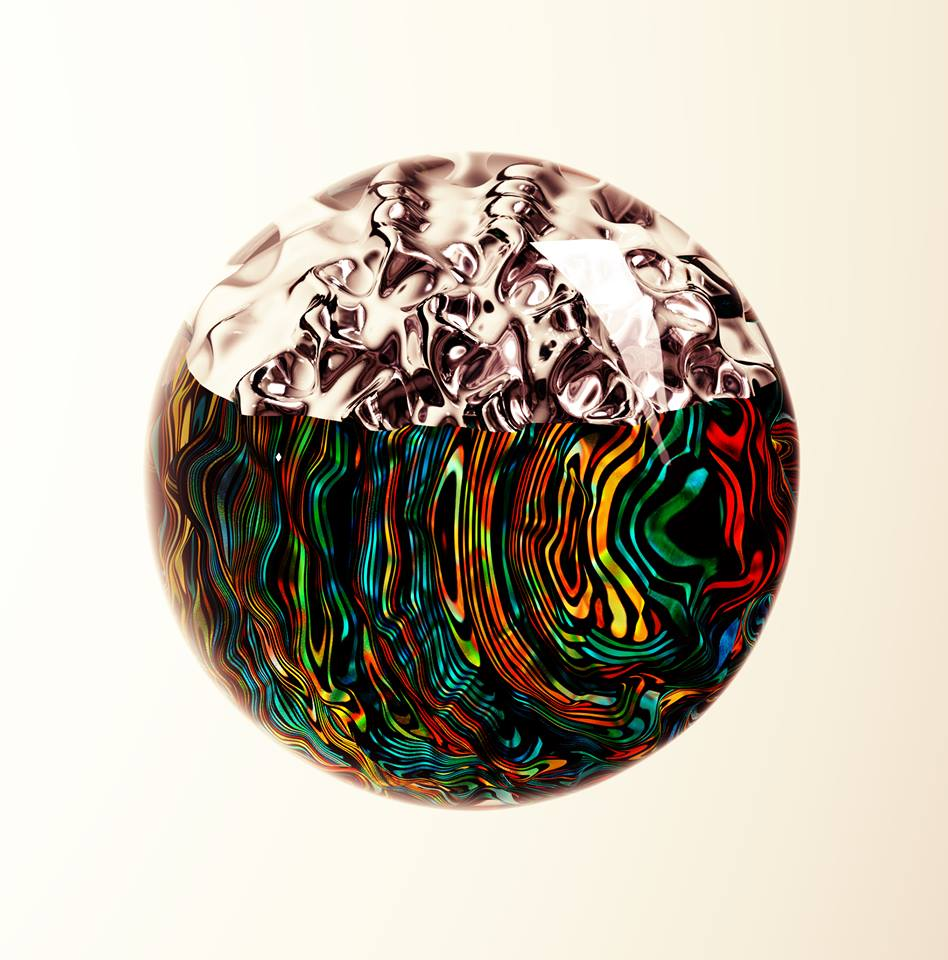
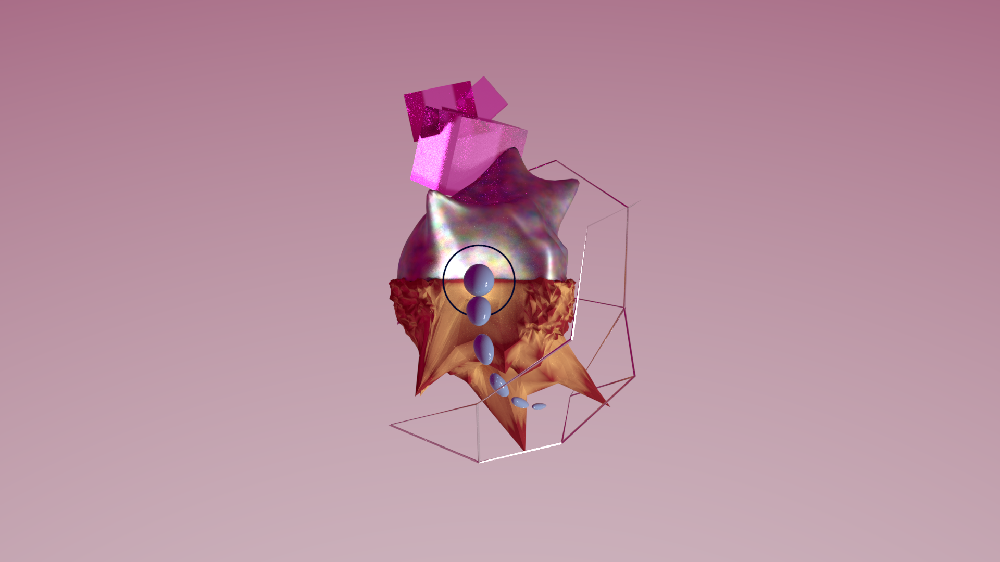

Quelques réalisations 3D personnelles
Voici quelques projets personnels que j'ai menés sur mon temps libre ces dernières années. Ma motivation pour ces projets est avant tout l'utilisation et l'apprentissage de Blender. Tous les projets sont faits avec Blender et son moteur de rendu cycles. Tous les modèles et matériaux sont faits à la main. J'ai utilisé GIMP pour la retouche des rendus bruts.

Expérimentations abstraites avec la shader "glass" dans cycles :

Personnage "bouteille" composé de modèles "hard surface" :
Expérimentation de composition abstraite et épurée :

Expérimentation avec des particules et le motion blur dans cycles :